ArgoCD + Image Updater
- Deploy ArgoCD + ArgoCD Image Updater in a minikube cluster
- Speed up ArgoCD and Image Updater check intervals
- Deploy an image to docker hub and an ArgoCD application
- Deploy new image and see automatic deployment
- Repeat the same with a public ECR repository
- Repeat the same with a private ECR repository
- A CronJob will rotate ECR credentials
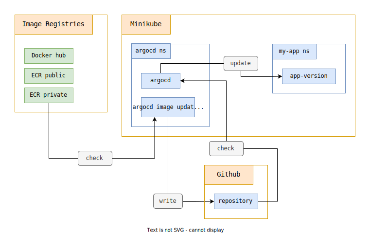
The application
You can fork this project
Important : make sure your repository is private as it will contain sensitive data !
The app-version application is a node application returns simple JSON :
app.get('/', (req, res) => {
const json = require('./package.json')
return res.json({[json.name]: json.version})
})
The JSON displays the current version of the application :
{"app-version": "0.0.1"}
Setup the .env file
The env-create script creates an .env file at the root of the project :
make env-create
You must modify the generated .env file with your own variables :
AWS_REGIONGITHUB_OWNERGITHUB_REPODOCKER_ACCOUNT_IDGITHUB_TOKEN
You need to create a Github Token
You need to select repo :

You need to select admin:public_key :
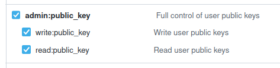
This Github Token is used by Terraform’s github provider :
provider "github" {
owner = var.github_owner
token = var.github_token
}
To assign an SSH key to your Github account :
resource "github_user_ssh_key" "ssh_key" {
title = var.project_name
key = tls_private_key.private_key.public_key_openssh
}
Setup the infrastructure
make terraform-create
Terraform is used to :
- Create an SSH key and add it to your Github account so you can interact with a private repository
- Create 2 ECR repositories, 1 public and 1 private
- Generate kubernetes manifests from templates
- These templates will inject variables into multiple … manifests
- Add new variables to the .env file
Important : generated files must be added to your git repository:
git add . && git commit -m update && git push -u origin master
Start minikube, Install ArgoCD + ArgoCD Image Updater
make minikube-create
The minikube-create command starts minikube
It installs a patched version of ArgoCD :
# install argocd
export TIMEOUT_RECONCILIATION=30s
scripts/argocd-install.sh
By default, ArgoCD waits 3 minutes (180 seconds) before testing the possible update of a git repository. (Resync operation).
We reduce this duration to 30 seconds during our experimentation phase to be able to work faster
We kustomize the install manifests by adding a argocd-cm ConfigMap containing the value timeout.reconciliation :
cat >$TEMP_DIR/kustomization.yaml <<EOF
apiVersion: kustomize.config.k8s.io/v1beta1
kind: Kustomization
resources:
- install.yaml
patches:
- target:
kind: ConfigMap
name: argocd-cm
patch: |-
- op: add
path: /data
value:
timeout.reconciliation: $TIMEOUT_RECONCILIATION
EOF
kustomize build $TEMP_DIR \
| kubectl apply \
--namespace argocd \
--filename -
The minikube-create command also installs a patched version of ArgoCD Image Updater :
export CHECK_INTERVAL=30s
scripts/argocd-image-updater-install.sh
By default, ArgoCD Image Updater waits 2 minutes (2m0s) before testing the possible update of a docker repository. (Interval option).
We reduce this duration to 30 seconds during our experimentation phase to be able to work faster :
cat >$TEMP_DIR/kustomization.yaml <<EOF
apiVersion: kustomize.config.k8s.io/v1beta1
kind: Kustomization
resources:
- install.yaml
patches:
- target:
kind: Deployment
name: argocd-image-updater
patch: |-
- op: add
path: /spec/template/spec/containers/0/args
value: ['--interval', '$CHECK_INTERVAL']
EOF
kustomize build $TEMP_DIR \
| kubectl apply \
--namespace argocd \
--filename -
To access the ArgoCD web interface, use the information displayed in the terminal :
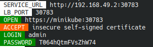
Important : I update my /etc/hosts file to adds this line :
192.168.49.2 minikube
Using Docker public repository
We are building version 0.0.1 of the app-version image :
make prod-build
We push this image to docker hub :
make docker-push
The docker image is online :
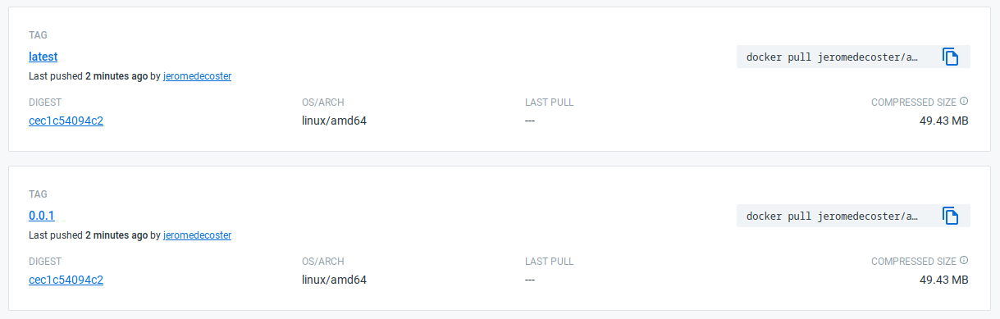
We install the argocd-app application which was generated from this template :
kubectl apply -f argocd/argocd-docker.yaml
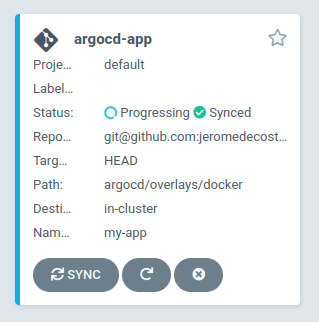
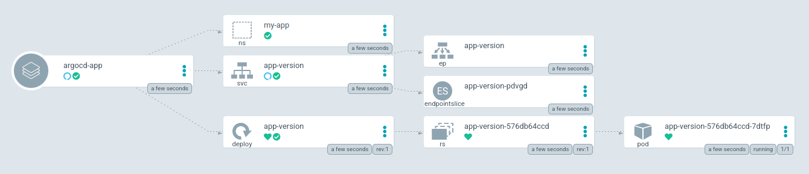
Push a new image version
Run the following command in a new terminal window :
make docker-watch
This command displays the following informations every 15 seconds :
- The local version written in the
package.jsonfile - The most recent tag available on our docker hub repository
- The current SHA of our git repository on github
- The SHA on which our ArgoCD application is currently synchronized
- The JSON returned the application running locally
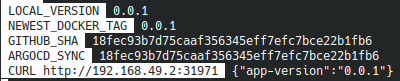
Run the following command in another terminal window:
make image-updater-logs
This command displays the logs of the argocd-image-updater application :
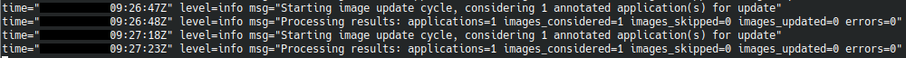
We are updating our local version :
make update-patch
This command increments the version value
This script modifies the package.json file
It changes from 0.0.1 to 0.0.2 :
{
"version": "0.0.2"
}
We build the image again: :
make prod-build
We push it on docker hub :
make docker-push
After a few moments the SHA github is updated :
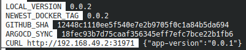
ArgoCD Image Updater commit and push a .argocd-source-argocd-app.yaml file :
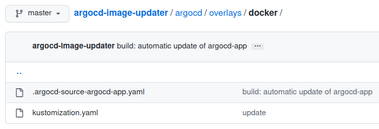
This file indicates the new version of the image to use :
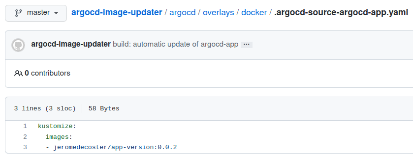
After a few more seconds, the site is updated by ArgoCD
The locally running application now returns the JSON {"app-vesion":"0.0.2"} :
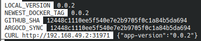
This part of the demonstration is over, we uninstall our application :
kubectl delete -f argocd/argocd-docker.yaml
Using ECR public repository
There is no real difference between hosting your images on docker hub or on a public ECR repository.
Let’s push our current version to ECR :
make ecr-public-push
The image is pushed :
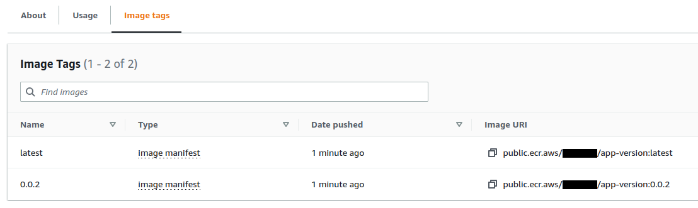
We install the argocd-app application which was generated from this template :
kubectl apply -f argocd/argocd-ecr-public.yaml
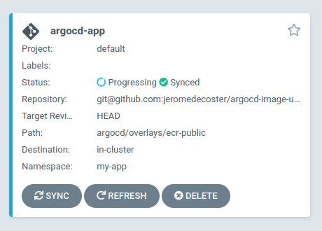
We can restart our command docker-watch :
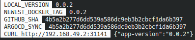
The NEWEST_DOCKER_TAG value will no longer be updated but the other information will still be interesting
We are pushing a new version 0.0.3 :
make update-patch \
&& make prod-build \
&& make ecr-public-push
After a few moments the SHA github is updated :
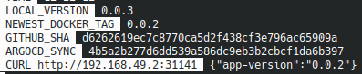
After a few more seconds, the application is updated by ArgoCD
The locally running application now returns the JSON {"app-vesion":"0.0.3"} :
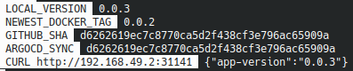
This part of the demonstration is over, we uninstall our application :
kubectl delete -f argocd/argocd-ecr-public.yaml
Using ECR private repository
Using a private ECR repository is more complex because :
- Kubernetes and ArgoCD Image Updater must have credentials to be able to retrieve private images
- Credentials generated by AWS are valid for 12 hours. They must therefore be updated automatically
ArgoCD Image Updater retrieves image using credentials via the annotation <image_alias>.pull-secret :
annotations:
# https://argocd-image-updater.readthedocs.io/en/stable/configuration/images/#available-annotations
argocd-image-updater.argoproj.io/image-list: app-version=${ecr_repo_private}
argocd-image-updater.argoproj.io/app-version.pull-secret: secret:argocd/aws-ecr-creds#creds
argocd-image-updater.argoproj.io/write-back-method: git:secret:argocd/git-creds
The credential aws-ecr-creds is created by this script :
# used to pull image from private ECR by argocd-image-updater
TOKEN=$(aws ecr get-login-password --region $AWS_REGION)
kubectl create secret generic aws-ecr-creds \
--from-literal=creds=AWS:$TOKEN \
--dry-run=client \
--namespace argocd \
--output yaml \
| kubectl apply --filename -
We need to add the imagePullSecrets property to the Deployment manifest :
It is added via a Kustomization file :
- target:
kind: Deployment
name: app-version
patch: |-
- op: add
path: /spec/template/spec/imagePullSecrets
value:
- name: regcred
resources:
- creds-secret-cm.yaml
- creds.yaml
regcred credentials are created by this script :
# used to pull image from private ECR by the deployment manifest
kubectl create secret docker-registry regcred -n my-app \
--docker-server=$AWS_ACCOUNT_ID.dkr.ecr.$AWS_REGION.amazonaws.com \
--docker-username=AWS \
--docker-password=$(aws ecr get-login-password --region $AWS_REGION)
To update our credentials before the 12 hour delay, we use a CrongJob :
For the demonstration, the job repeats every 5 minutes */5 * * * *
But every 10 hours 0 */10 * * 0 is a more realistic rate
The CronJob uses the odaniait/aws-kubectl:latest image which contains a version of aws-cli and kubectl pre-installed
The image hasn’t been updated for a long time and these commands are several years old, but they still work perfectly
apiVersion: batch/v1
kind: CronJob
metadata:
name: ecr-private-cronjob
namespace: my-app
spec:
schedule: "*/5 * * * *" # "0 */10 * * 0"
successfulJobsHistoryLimit: 3
suspend: false
jobTemplate:
spec:
template:
spec:
serviceAccountName: ecr-private-sa
containers:
- name: ecr-registry-helper
image: odaniait/aws-kubectl:latest
imagePullPolicy: IfNotPresent
envFrom:
- secretRef:
name: ecr-private-secret
- configMapRef:
name: ecr-private-cm
command:
- /bin/sh
- -c
- |-
ECR_TOKEN=`aws ecr get-login-password --region ${AWS_REGION}`
NAMESPACE=my-app
kubectl delete secret --ignore-not-found $DOCKER_SECRET_NAME -n $NAMESPACE
kubectl create secret docker-registry $DOCKER_SECRET_NAME \
--docker-server=https://${AWS_ACCOUNT_ID}.dkr.ecr.${AWS_REGION}.amazonaws.com \
--docker-username=AWS \
--docker-password="${ECR_TOKEN}" \
--namespace=$NAMESPACE
echo "Secret was successfully updated at $(date)"
restartPolicy: Never
---
apiVersion: v1
kind: ServiceAccount
metadata:
name: ecr-private-sa
namespace: my-app
---
apiVersion: rbac.authorization.k8s.io/v1
kind: Role
metadata:
namespace: my-app
name: role-full-access-to-secrets
rules:
- apiGroups: [""]
resources: ["secrets"]
resourceNames: ["regcred"]
verbs: ["get", "list", "delete"]
- apiGroups: [""]
resources: ["secrets"]
verbs: ["get", "list", "create"]
---
kind: RoleBinding
apiVersion: rbac.authorization.k8s.io/v1
metadata:
name: ecr-private-role-binding
namespace: my-app
subjects:
- kind: ServiceAccount
name: ecr-private-sa
namespace: my-app
apiGroup: ""
roleRef:
kind: Role
name: role-full-access-to-secrets
apiGroup: ""
---
Note in the manifest file above :
- The
role-full-access-to-secretsrole gives the ability to create a secret :
- apiGroups: [""]
resources: ["secrets"]
verbs: ["get", "list", "create"]
- To delete only the secret named
regcred:
- apiGroups: [""]
resources: ["secrets"]
resourceNames: ["regcred"]
verbs: ["get", "list", "delete"]
The instance uses environment variables retrieved from these 2 sources :
image: odaniait/aws-kubectl:latest
envFrom:
- secretRef:
name: ecr-private-secret
- configMapRef:
name: ecr-private-cm
Variables are defined via this template :
apiVersion: v1
kind: Secret
metadata:
name: ecr-private-secret
namespace: my-app
stringData:
AWS_ACCESS_KEY_ID: "${aws_access_key_id}"
AWS_SECRET_ACCESS_KEY: "${aws_secret_access_key}"
AWS_ACCOUNT_ID: "${aws_account_id}"
---
apiVersion: v1
kind: ConfigMap
metadata:
name: ecr-private-cm
namespace: my-app
data:
AWS_REGION: "${aws_region}"
DOCKER_SECRET_NAME: regcred
---
Let’s define the starting credentials :
make secret-ecr-creds
Let’s push our current version to ECR :
make ecr-private-push
The image is pushed :
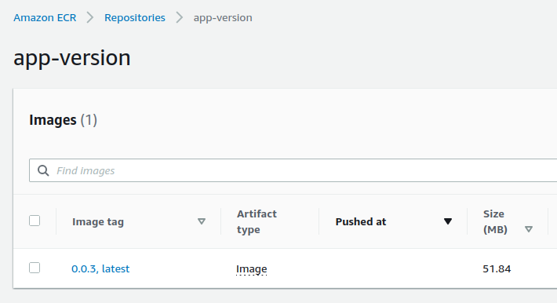
We install the argocd-app application which was generated from this template :
kubectl apply -f argocd/argocd-ecr-private.yaml
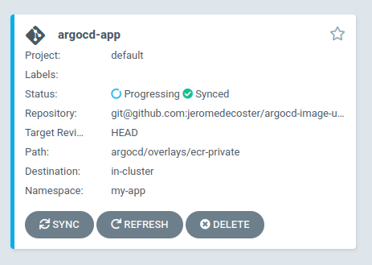
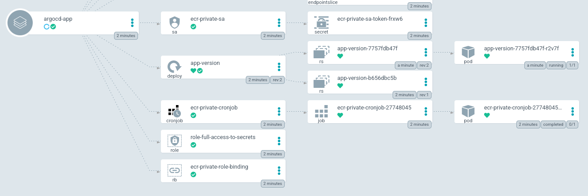
We can restart our command docker-watch :
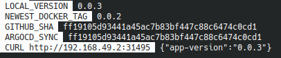
We are pushing a new version 0.0.4 :
make update-patch \
&& make prod-build \
&& make ecr-private-push
After a few moments the SHA github is updated :
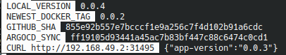
After a few more seconds, the application is updated by ArgoCD
The locally running application now returns the JSON {"app-vesion":"0.0.4"} :
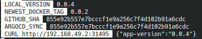
This part of the demonstration is over, we uninstall our application :
kubectl delete -f argocd/argocd-ecr-private.yaml
Improvements
To keep it simple, this demo is not exhaustive
Here are 3 points for improvement :
- Use the
CronJobto also update the token contained in theaws-ecr-credssecret - Encrypt the secrets with Sealed Secrets
- Build your own Docker image instead using
odaniait/aws-kubectl
Cleaning
This demonstration is now over, we are destroying the resources :
make terraform-destroy \
&& minikube stop